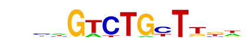

| p-value: | 1e-81 |
| log p-value: | -1.874e+02 |
| Information Content per bp: | 1.743 |
| Number of Target Sequences with motif | 190.0 |
| Percentage of Target Sequences with motif | 10.86% |
| Number of Background Sequences with motif | 871.2 |
| Percentage of Background Sequences with motif | 1.87% |
| Average Position of motif in Targets | 40.3 +/- 19.4bp |
| Average Position of motif in Background | 48.4 +/- 34.8bp |
| Strand Bias (log2 ratio + to - strand density) | 0.0 |
| Multiplicity (# of sites on avg that occur together) | 1.03 |
| Motif File: | file (matrix) reverse opposite |
| Rank | Match Score | Redundant Motif | P-value | log P-value | % of Targets | % of Background | Motif file |
| 1 | 0.965 | 1e-79 | -183.602532 | 9.26% | 1.34% | motif file (matrix) | |
| 2 | 0.798 | 1e-54 | -124.920233 | 10.12% | 2.46% | motif file (matrix) | |
| 3 | 0.838 | 1e-44 | -101.762491 | 14.29% | 5.30% | motif file (matrix) | |
| 4 | 0.728 | 1e-42 | -98.638333 | 29.10% | 15.93% | motif file (matrix) | |
| 5 | 0.851 | 1e-38 | -88.452799 | 13.44% | 5.21% | motif file (matrix) | |
| 6 | 0.821 |  | 1e-28 | -65.907159 | 4.35% | 0.86% | motif file (matrix) |
| 7 | 0.634 | 1e-27 | -63.709461 | 9.78% | 3.79% | motif file (matrix) | |
| 8 | 0.627 | 1e-23 | -54.618884 | 7.49% | 2.71% | motif file (matrix) | |
| 9 | 0.625 | 1e-11 | -27.619480 | 6.23% | 2.96% | motif file (matrix) |